Sports Images Dataset contains image data from multiple sports categories. Each record includes an image and its corresponding category label.
baseball, tennis, boxing, ...)
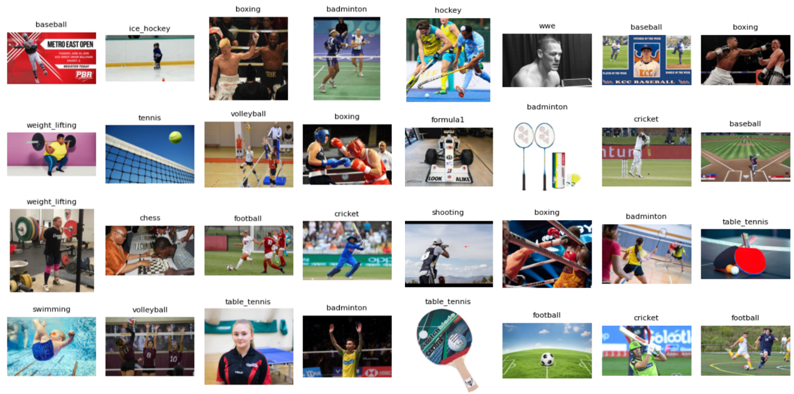
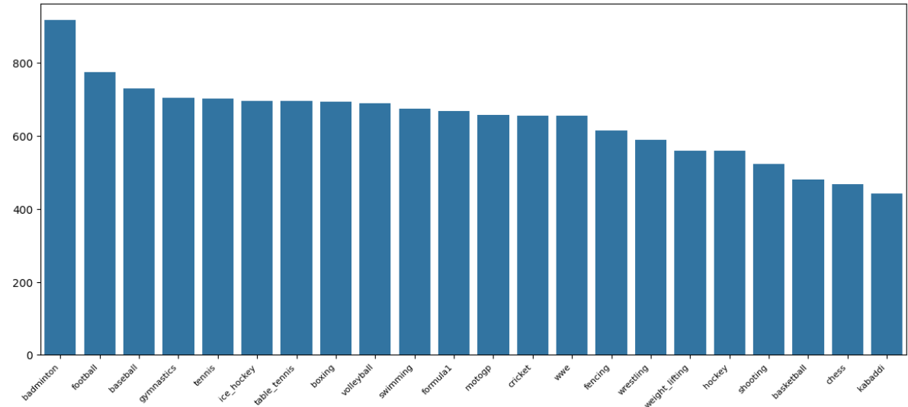
Data augmentation: RandomResizedCrop, HorizontalFlip, ColorJitter
Split data into Train/Validation/Test (70/15/15)
Pipeline:
CNN Models: VGG16, ResNet34, EfficientNet
Transformer Models: Vision Transfomer, Swin Transformer (full fine-tuning)
Loss: CrossEntropy with class weights
Optimizer: SGD / AdamW
Techniques: L2 regularization
Metric: Weighted F1-Score
| Rank | Model | Approach | F1-Score |
|---|---|---|---|
| 1 | Swin Transformer | Full fine-tuning | 0.9560 |
| 2 | Vision Transformer | Full fine-tuning | 0.9553 |
| 3 | EfficientNet | Full fine-tuning | 0.8857 |
| 4 | ResNet34 | Full fine-tuning | 0.8756 |
| 5 | VGG16 | Full fine-tuning | 0.8577 |
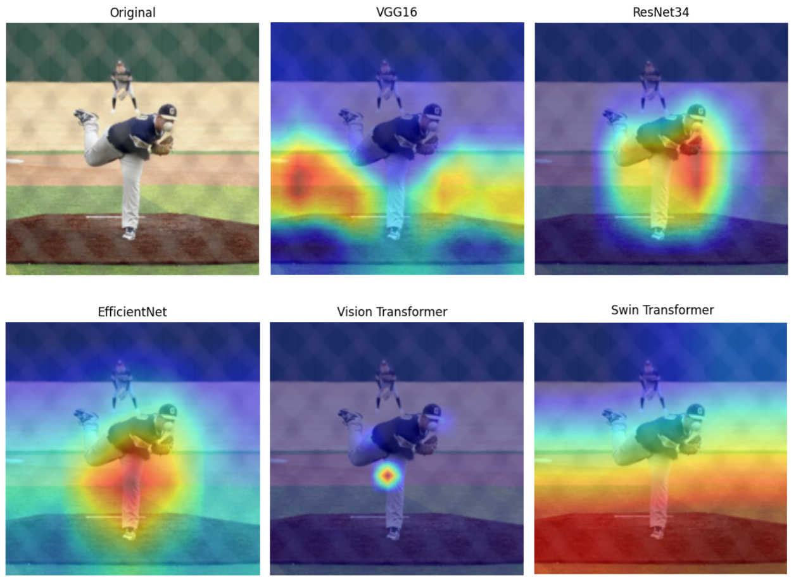
Model shows significant errors in classes such as kabaddi, shooting, hockey, where accuracy is relatively low. It also frequently confuses visually similar pairs like tennis–badminton, wrestling–boxing, and shooting–cricket. These errors suggest difficulty in distinguishing fine-grained visual differences between similar sports.
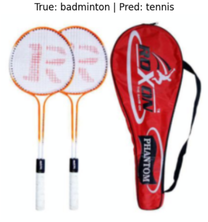
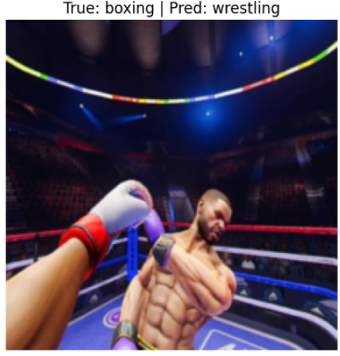
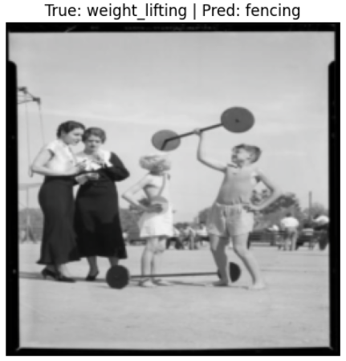
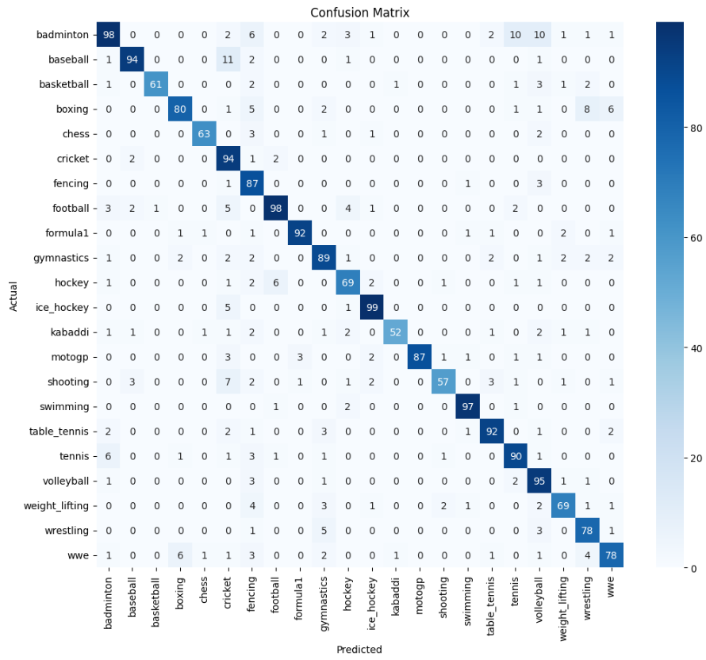
Model still struggles with classes such as kabaddi, shooting, hockey, and weight_lifting, which show lower accuracy compared to others. There are also noticeable confusions between similar classes like tennis–badminton, boxing–wwe, and cricket–football, indicating difficulty in distinguishing fine-grained visual differences.
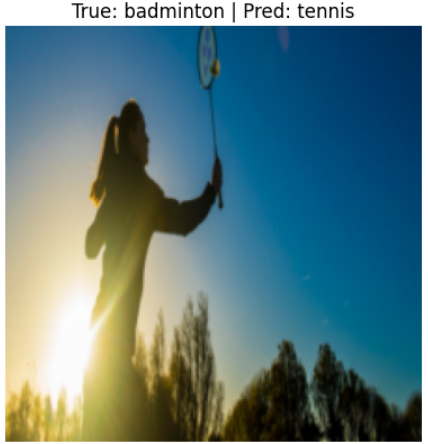
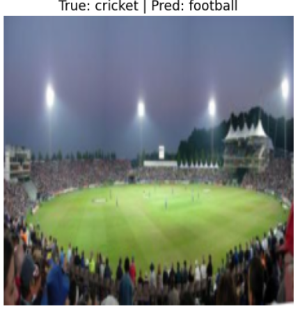
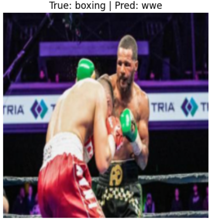
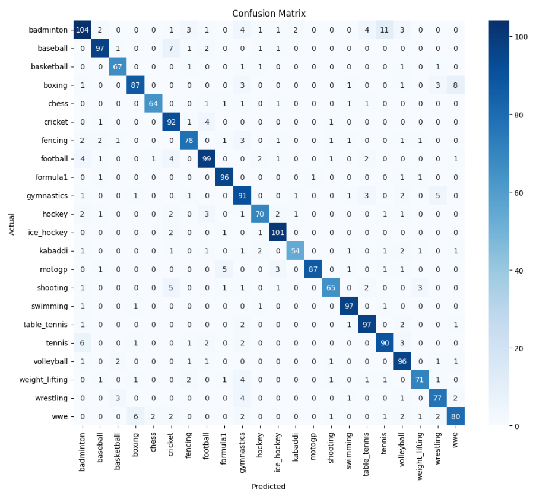
Model still performs poorly on kabaddi, shooting, hockey, and weight_lifting, which remain the weakest classes. Confusions between similar classes such as tennis–badminton and boxing–wwe are still present, though slightly reduced compared to before.
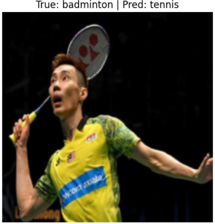
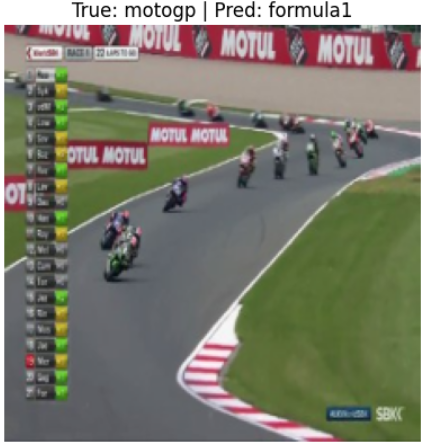
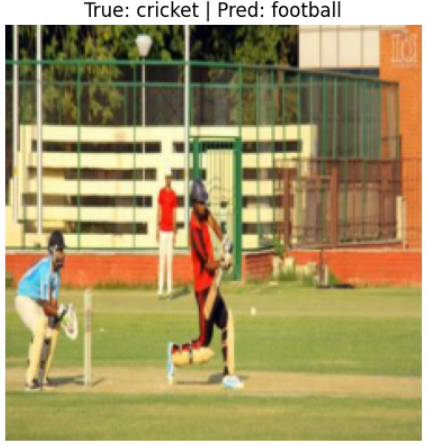
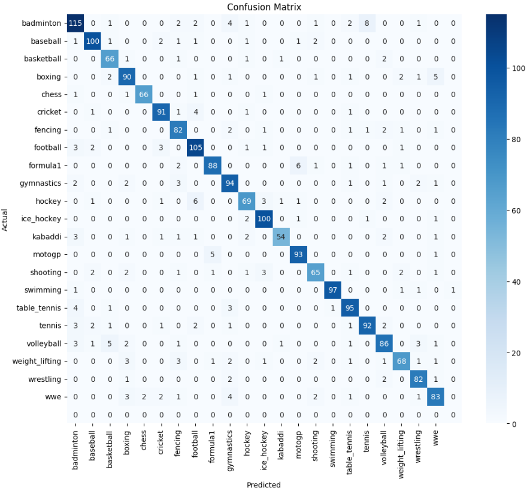
There is a clear improvement: kabaddi increases significantly, while shooting, hockey, and weight_lifting also show noticeable gains. Confusions between similar classes such as tennis–badminton and boxing–wwe are greatly reduced. The confusion matrix is now much cleaner along the diagonal, indicating a more stable and reliable model.
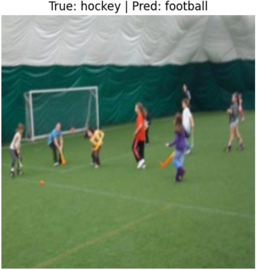
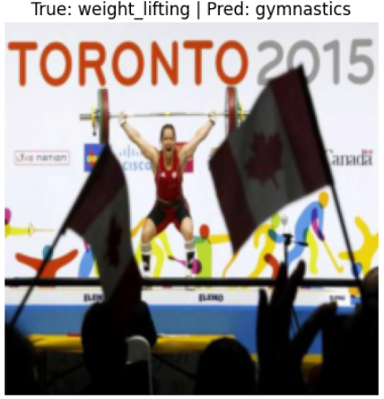
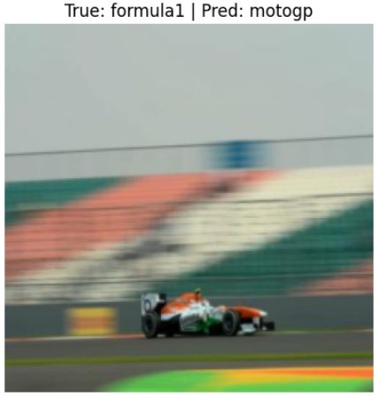
There is further improvement across difficult classes: kabaddi, shooting, hockey, and weight_lifting all continue to increase. Confusions between similar classes are now minimal, and the matrix is even cleaner along the diagonal. This indicates the model has become more accurate and consistently stable across all categories.
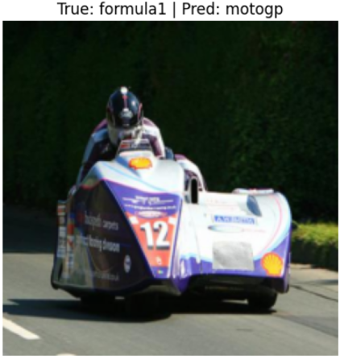
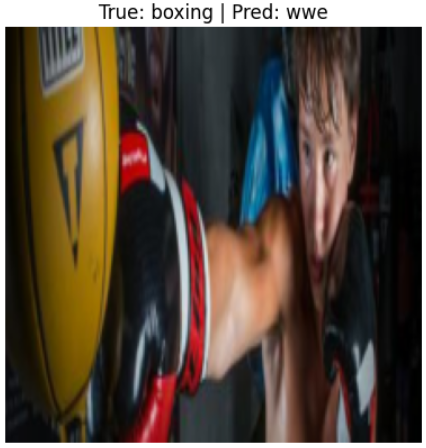
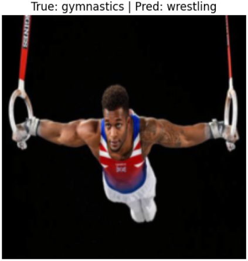
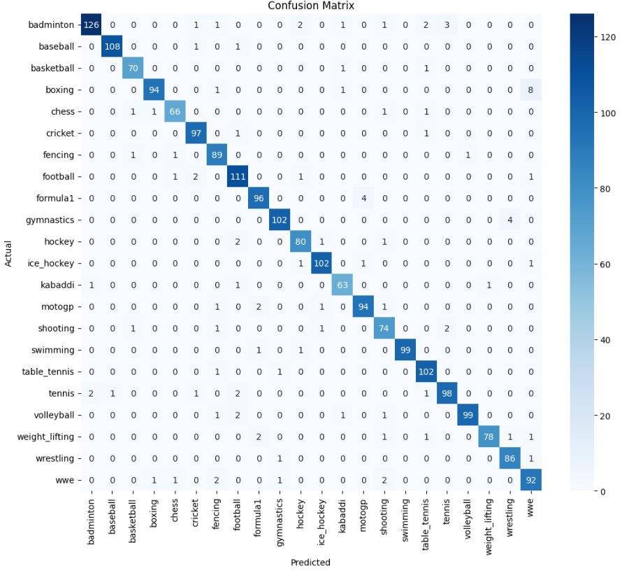
tennis–badminton, boxing–wwe, formula1–motogp), making them harder to distinguish.Patent classification is a text dataset used for a multi-class classification task. Each sample includes: a patent description and a corresponding label.
Physics, Electricity, Human Neccessities, ...)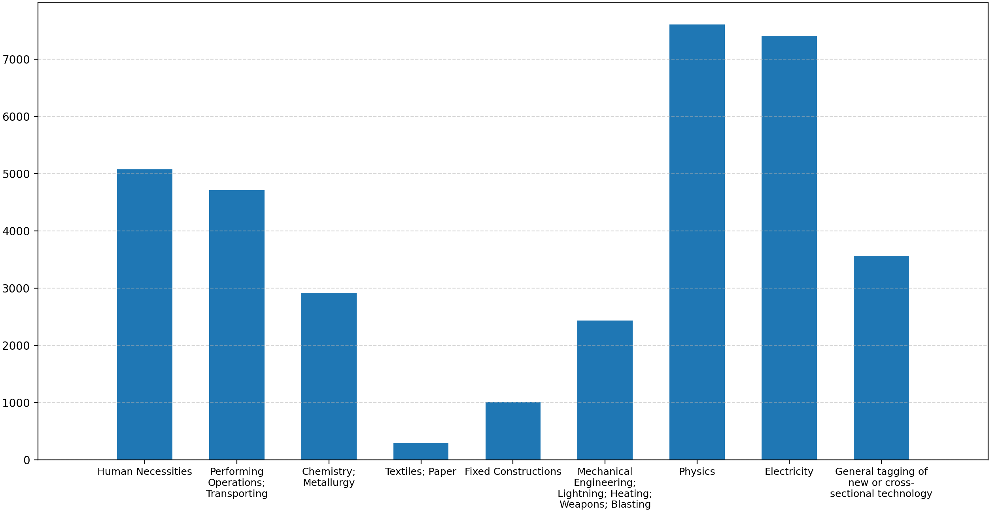
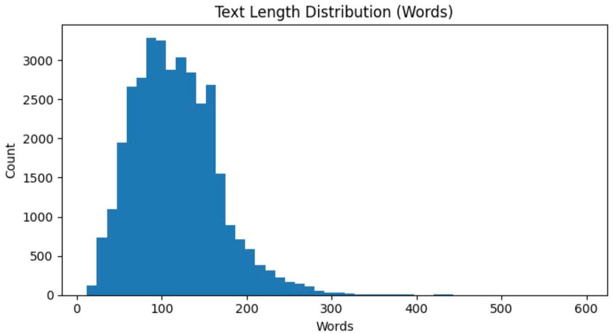


Data augmentation
Split data into Train/Validation/Test (70/15/15)
RNN Pipeline:
Transformer Pipeline:
RNN Models: LSTM / GRU, BiLSTM / BiGRU, BiLSTM + Attention
Transformer Models: BERT, RoBERTa (freeze backbone, full fine-tuning, layer-wise learning rate)
Loss: CrossEntropy with class weights
Optimizer: AdamW
Techniques: Early stopping, Gradient clipping (RNN)
Metric: Weighted F1-Score
| Rank | Model | Approach | F1-Score | Training time |
|---|---|---|---|---|
| 1 | BERT + MLP | Full fine-tuning | 0.6320 | 1370 |
| 2 | RoBERTa + MLP | Layerwise lr | 0.6269 | 1411 |
| 3 | BERT + BiLSTM | Full fine-tuning | 0.8857 | 1520 |
| 4 | DistilBERT + MLP | Full fine-tuning | 0.6115 | 732 |
| 5 | DistilBERT + BiGRU | Full fine-tuning | 0.5965 | 855 |
| 6 | BERT + MLP | Partial fine-tuning | 0.5793 | 722 |
| 7 | DistilBERT + MLP | Frozen | 0.4871 | 340 |
| 8 | GRU | RNN | 0.4560 | 71 |
| 9 | fastText + BiGRU | RNN | 0.4560 | 101 |
| 10 | fastText + BiLSTM | RNN | 0.4301 | 111 |
| 11 | LSTM | RNN | 0.4215 | 81 |
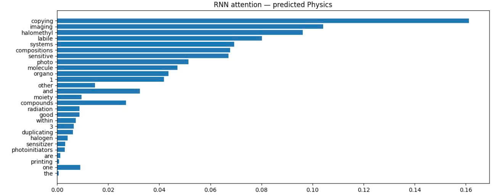
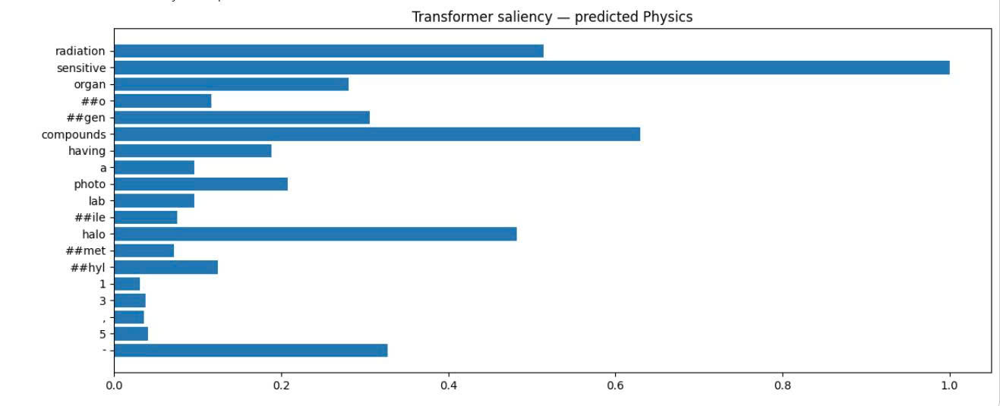
The two figures show the difference in how Transformer and RNN identify important words when predicting the Physics label. In the Transformer model, several keywords such as sensitive, compounds, radiation, and halo have very high saliency values, indicating that the model focuses strongly on a few core scientific terms to make its prediction. In contrast, the RNN model distributes attention more evenly across multiple words such as copying, imaging, halomethyl, systems, and molecule. This suggests that the RNN relies on a broader contextual range within the text, while the Transformer tends to depend more on prominent keywords for classification. Overall, both models capture terminology related to physics and chemistry, but they differ in how they allocate importance to the words.